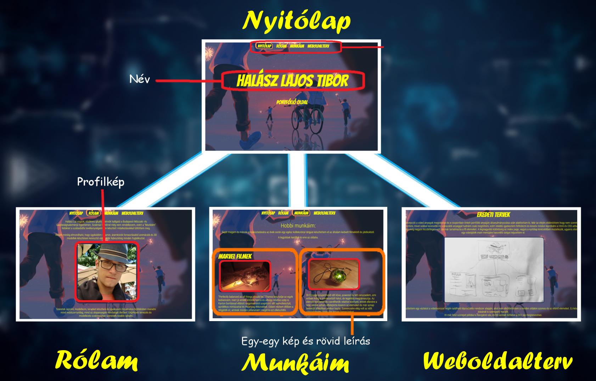

Ezen az oldalon a portfólió elkészítésének részletes folyamata olvasható, a munkafázisok és felmerülő nehézségek összefoglalása az alap koncepciótól a végleges változatig.
Az alap koncepciót a videó anyagok megnézése és a csoportban linkelt portfólió anyagok áttanulmányozása után alakítottam ki. Már az elején eldöntöttem hogy nem szeretnék hivatalos portfóliót készíteni, mivel sokkal kevesebb és szárazabb anyaggal tudnám csak megtölteni, ezért inkább igyekeztem felfedezni és kreatív módon kipróbálni a Html és CSS adta lehetőségeket.
Az eredeti dizájn még nagyon kezdetleges volt, de már tartalmazta a fő elemeket. A legnagyobb különbség az index page, vagyis a nyitólap kinézetében mutatkozik, ugyanis eleinte sokkal inkább egy videójáték main menüjére hasonlító dolgot képzeltem el.
Ez után készítettem egy vázlatot a videósorozat végén található lépcsőzetes rendszer alapján, ahol már elkülönítettem a minden oldalon azonos és az eltérő elemeket. Ez később a CSS kód írásánál is szempont maradt.
Itt már felül szerepel például a navigáció sáv, és fel vannak tüntetve a 3+1 lap megnevezései.
A betűtípusok válogatásánál megtetszett egy font, amely ihletet adott a jelenlegi, sokkal inkább képregény-szerű interface kidolgozására amelyben néhány számomra kedves hobbimunkámat mutatom be nektek.
Az első nehézség a háttér kiválasztása volt, ugyanis miután rájöttem, hogy a gif formátumú mozgó hátteret semmivel sem nehezebb beállítani mint egy sima képet, egy órát keresgéltem míg találtam Full HD felbontású loopolt gif hátteret ami passzolt színben és tartalmilag is.
Szerettem volna interaktívvá tenni a felületet, ezért utánanéztem a hover-transition animációk kivitelezésének és írtam bele néhányat a navigációs sávba valamint a Munkáim felületen a képekhez.
Így készült el a képen látható végleges verzió.
Természetesen, mivel még soha nem dolgoztam Html és CSS kódokkal, ezért ez a feladat fejesugrás volt a mélyvízbe. Nagyrészt improvizáltam az oldalak kinézetét készítés közben ahogy éppen logikusnak tűnt. Apró lépésekben haladtam és folyamatosan teszteltem. Ha egy próbálkozás nem jött be kitaláltam egy másikat. Emiatt a további kód írási folyamatról nem áll rendelkezésre túl informatív dokumentáció.

A responsive-vá tétel okozott némi fejtörést, de végül sikerült egy aránylag responsive felületet létrehoznom minden lapon. A legnagyobb nehézség a CSS kódok sokszínűségében rejlett számomra, mert még első nekifutásra nehezen boldogultam a pozícionálással a grid, inline-block elemekkel, ezért ezt a részét nem tudtam
kellő komplexitással alkalmazni a munkámban, amit kicsit sajnálok azért, de igyekszem a későbbiekben elsajátítani.
Felhasznált weboldalak listája:
w3schools honlapja